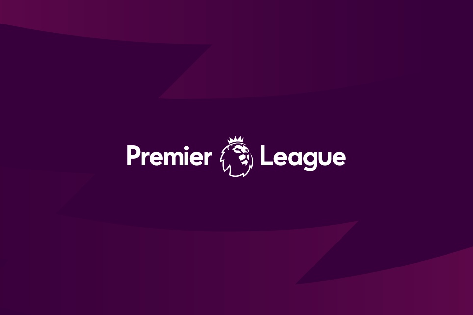

축구, 프로축구 리그
11명이 한 팀이 되어 발로 공을 차서
몰고들어가 상대편 골문에 넣음으로써 승패를 겨루는 경기.
발을 주로 사용하며 스피드가 있고, 각종 기술의 순간적인
변화를 필요로 하는 남성적인 운동의 특성을 지니고 있다.
또한, 한 팀이 11명으로 이루어지기 때문에 팀의 조직력과 단결력이 매우 중요시된다.
목차
근대 축구의 탄생
FA 결성 이전의 영국 축구는 지역별로 제각각 다른 규칙으로 경기하고 있었다.
그러나 지역간 경기가 잦아지면서 통일 규칙의 필요성이 대두되었고,
1848년에 캠브리지 대학을 중심으로 축구 규칙에 대해 논의하기 시작했고
캠브리지 룰이라는 대략적인 축구 규정이 등장했다.
그 후 1863년 잉글랜드의 런던 주변 11개 클럽이 참여한 FA가 결성되었다.
이듬해 FA는, 손을 쓸 수 있는 등 오늘날과 다른 최초의 통합 규칙을 명문화해서 제정하였다.
이후 FA는 가맹 클럽이 지속적으로 늘어났고 1871년 최초의 축구대회인 FA컵이 탄생하며
축구는 근대스포츠로서의 기틀을 갖추었다.
잉글랜드 프리미어리그
영국 잉글랜드의 최상위 프로축구 리그.
1992년에 출범하면서 종전까지 있었던 풋볼 리그 퍼스트 디비전의 최상위 리그 포지션을 대체했다.
전 세계 축구 리그 중 가장 대중성이 있다고 평가 받는 동시에,
가장 많은 수익을 벌어들이고 있는 축구 리그다.
분데스리가
독일의 최상위 프로축구 리그로, 유럽을 대표하는 축구 리그 중 하나.
독일 축구 리그가 운영하고 독일 축구 연맹과 리가페르반트에서 주관하는 축구 리그이며.
독일의 축구리그 중 최상위리그이다.
이들이 곧 독일 국가대표팀이라 해도 과언이 아니다.
세리에A
총 4부로 구성된 이탈리아 프로 축구 리그 가운데 1부 리그를 가리킨다.
참고로 세리에 A의 뜻은 원래 그냥 1부 리그 정도의 의미다.
그래서 이탈리아의 농구, 야구, 배구, 하키, 럭비 리그에도 세리에 A라는 이름이 붙는다.
이른바 세계 4대 축구 리그에 속한다.
라리가
스페인의 최상위 축구 리그.
정식 명칭이 스페인 1부 리그라는 뜻의 '프리메라 디비시온 데에스파냐'으로 잘못 알려져있지만,
라리가라는 리그 브랜딩 개편 이후 정식 명칭이 라리가로 변경되었다.
